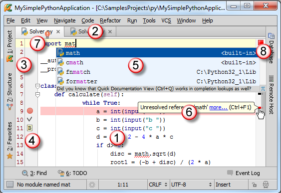
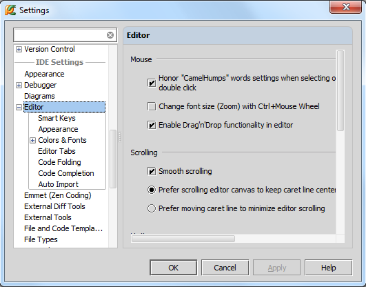

最全Pycharm教程（4）——有关Python解释器的相关配置
最全Pycharm教程（6）——将Pycharm作为Vim编辑器使用
最全Pycharm教程（8）——Django工程的创建和管理
最全Pycharm教程（9）——创建并运行一个基本的Python测试程序
最全Pycharm教程（11）——Pycharm调试器之断点篇
最全Pycharm教程（12）——Pycharm调试器之Java脚本调试
1、主题
在编写代码的过程中，大部分时间都花在了编辑框的交互中。为了能够更高效的使用这个工具，我们将对其一下特点进行分节介绍：
更多内容详见 online help。至于编程方面的知识参见Python 和 Django 文档。
2、准备工作
（1）Pycharm版本为2.7或者更高。
（2）已经创建并配置了一个工程。
3、鸟瞰编辑框

（1）主编辑区，用来编写代码。
（2）编辑框的标题栏，标记了当前处于激活状态下的编辑框选项卡，每个选项卡中都隐含了大量的相关的快捷菜单命令，详见Managing Tabs。
（3）行号，默认显示，如果需要可以通过右击行号取消Show line numbers复选框来隐藏行号。当然通过Settings | Editor | Appearance - Show line numbers主菜单命令也能到达同样目的。
（4）俗称左槽，此时这里显示了三种图标，分别为用于调试的断点breakpoint，用来导航的书签bookmarks。
（5）弹出的拼写提示code completion窗口
（6）俗称诊断标志球。当代码出现错误时，Pycharm会以红色波浪线标记错误代码行，在右槽对应行显示诊断标志球，并给出具体提示。
（7）在拼写提示菜单的左侧，有一个红色的灯泡，功能参见 quick fix。
（8）右槽，处于编辑框的右侧，显示各种颜色的标志来指示代码状态，是否存在错误、警告等等。同样具有导航功能，方便我们快速定位代码出错位置、转到指定代码行等等。
4、配置编辑器
Pycharm的编辑器配置十分灵活，在设置对话框中（Ctrl+Alt+S - IDE Settings - Editor）可以对其外观和行为进行各种各样的更改：

在这里你可以找到关于鼠标、滚轮、代码范围、错误高亮显示方案等相关的设置命令。
虽然你可以直接使用默认的编辑器设置，但如果你希望修改其中的部分设置的话，可以参考editor optionshere或者单击界面的help按钮。
举个例子，你可能希望使用“ctrl+鼠标滚轮 来改变字体大小”这一功能，这个功能默认情况下是关闭的，需要手动打开。再比如你可能已经习惯了"Autoreparse delay"功能，这些都需要手动进行设置。
接下来我们就会分解对编辑器的功能进行介绍。